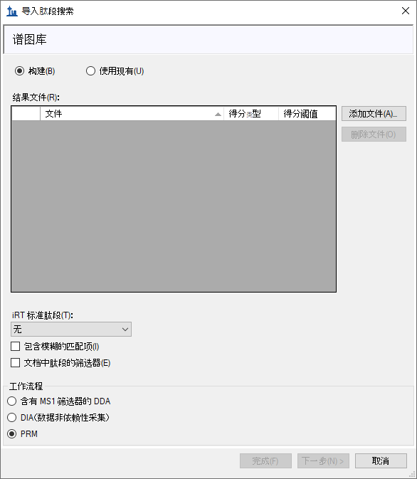
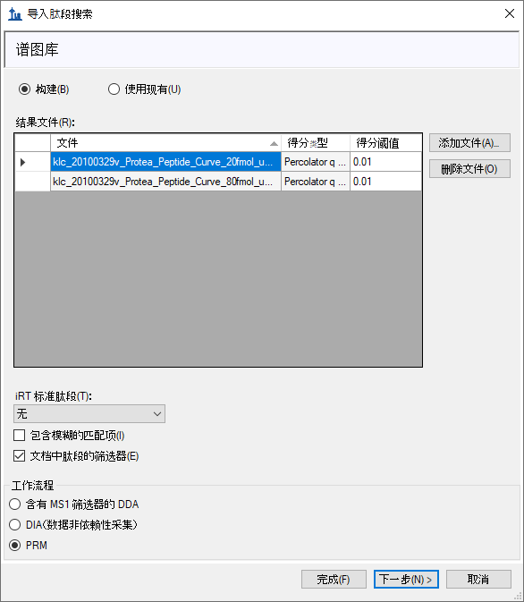
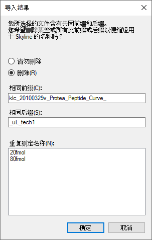
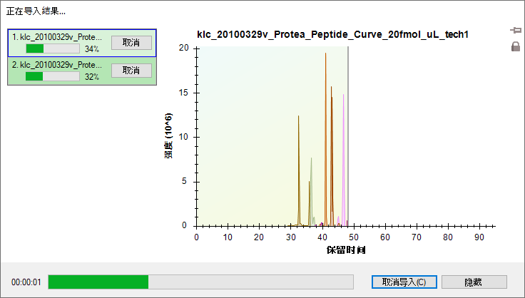
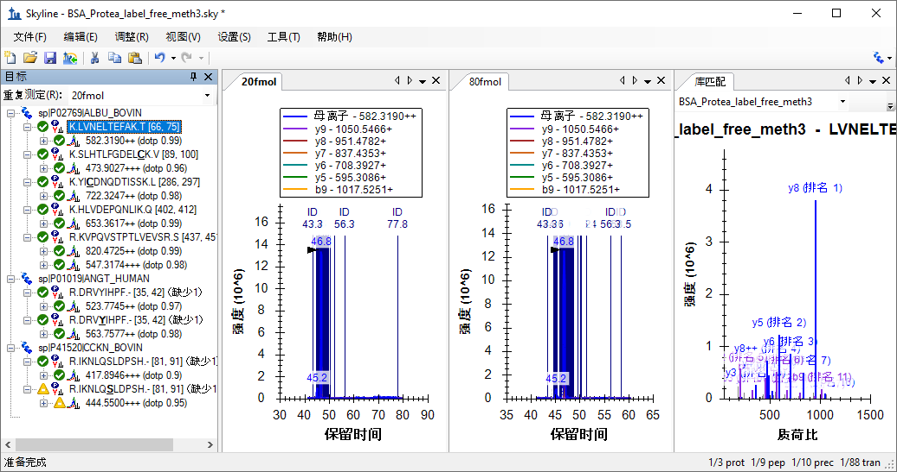
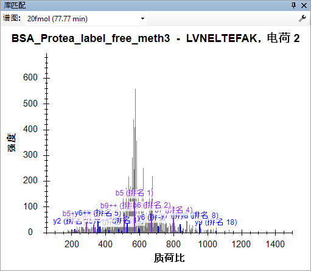
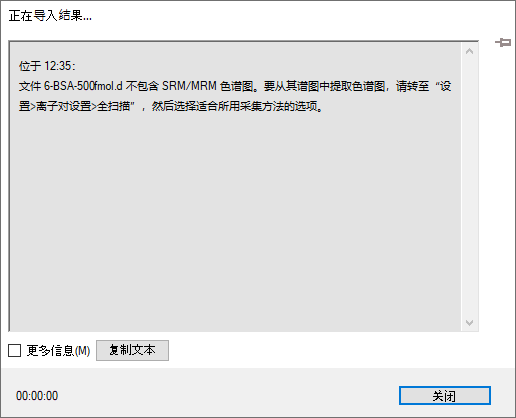
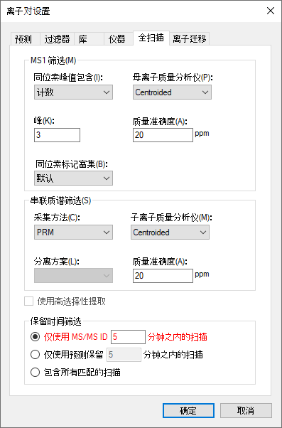
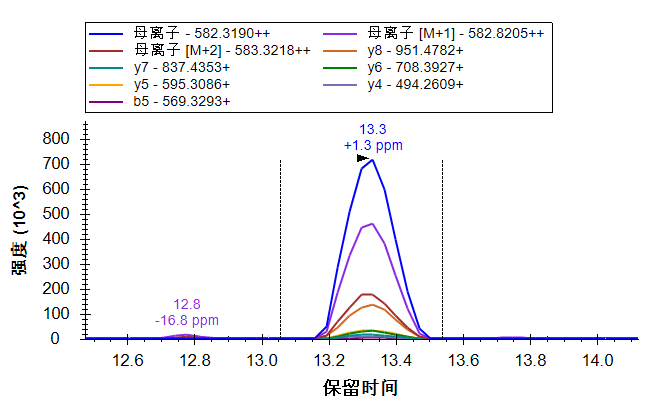
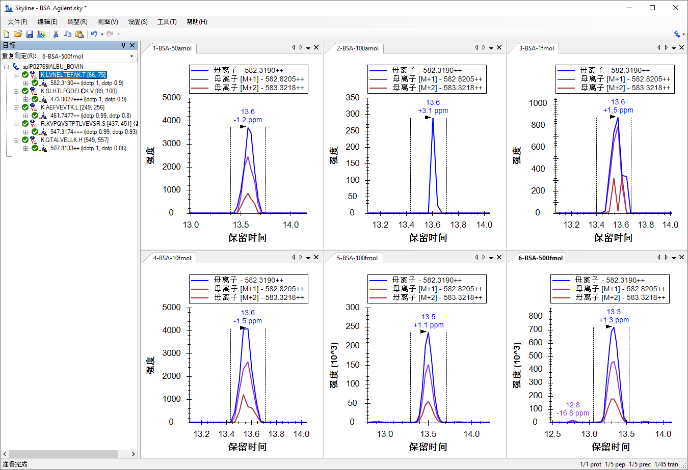

Skyline 支持从多种全扫描质谱仪（如离子阱、Orbitrap 和 Q-TOF 仪器）产生的原始数据文件中提取基于色谱峰的定量测定结果。对来自六大供应商（Agilent、Bruker、SCIEX、Shimadzu、Thermo-Scientific、Waters）的质谱仪，不论是高分辨率质谱仪还是低分辨率质谱仪，Skyline 都可以兼容。
在本教程中，您将学习如何使用 Skyline 来分析一种叫做平行反应监测 (PRM)的靶向质谱方法（这种方法亦称伪 SRM 或 MRM-HR™）采集的数据。顾名思义，PRM 是一种与基于三重四级杆质谱仪的 SRM 非常相似的一种扫描方法：
在 SRM 扫描成对的母离子和子离子时， 将随时间的推移收集每一对的单个强度测量值；PRM 扫描不依赖数据的母离子列表，从而收集每一个母离子在每个周期的完整 MS/MS 谱图。
Skyline 可以对以这种方式采集的完整MS/MS谱图进行提取，来获得时间-强度色谱图。
由此产生的色谱图提供的定量数据，与目前在 Skyline 中分析的SRM数据类似。
当三重四极杆质谱仪不可用时，可将PRM作为一种替代方法。虽然如此，这种高分辨率串联质谱相比传统 SRM 在选择性上有其优势，而且完整的MS/MS数据可以进行肽段搜索，从而帮助验证色谱峰提取的正确性。PRM 还可以用于对多种全扫描质谱仪进行系统适用性测试，即便是在进行数据依赖的采集 (DDA) 时，也同样可用。这种无需进行肽段鉴定的质量控制方法将专门在另外一篇教程中进行介绍。本教程将探讨 PRM 在低分辨率 Thermo LTQ 和高分辨率 Agilent Q-TOF 上进行靶向定量测定的用法。
开始本教程之前，请下载下列 ZIP 文件：
https://skyline.ms/tutorials/TargetedMSMS_2.zip
将其中的文件解压到您的电脑文件夹，如：
C:\Users\brendanx\Documents
这将创建一个新文件夹：
C:\Users\brendanx\Documents\TargetedMSMS
其中包含本教程所需的所有文件。在 Windows 资源管理器中，导航至新的“Targeted MSMS”文件夹及其包含的子文件夹“Low Res”。双击文件“BSA_Protea_label_free_meth3.sky”，即可打开其中包含低分辨率 Thermo LTQ 仪器所产生的 PRM 数据的 Skyline 项目。
选择文档中的第一个肽段，Skyline 将显示如下：
这是一个相对较小的文档。右下角状态栏显示其中包含 10 个肽段母离子，总共 78 个子离子或目标离子对。其中有些母离子具有源自公共 NIST 库的牛血清白蛋白 (BSA) 相关串联质谱谱图库。另外，还有两条分别存在非修饰形式和磷酸化修饰形式的肽段（一条为人源肽段，一条为牛源肽段），但这两条肽段不存在串联质谱谱图库。
如果您不熟悉如何在 Skyline 中创建这样的文档，可查看各入门教程和教学视频，其中涵盖各种 Skyline 方法编辑功能的介绍。本教程将假设您熟悉如何使用Skyline进行靶向蛋白质组学方法编辑，从现有文档入手。
在 Windows 资源管理器中，您还将在此 Skyline 文档的同一个“Low Res”文件夹中看到两个 Thermo 原始文件。这些文件包含使用上述 PRM 方法在低分辨率 LTQ 仪器上采集的一系列 MS1 和串联质谱谱图，看起来如下：
您可以使用 Skyline 为 Thermo-Scientific、Bruker 和 SCIEX 质谱仪导出与此类似的 PRM 方法。对于 Agilent、Waters 以及 Thermo Q Exactive 仪器，Skyline 可以导出目标离子列表（Isolation list）或等同于 PRM 的 SRM 离子对列表。在为全扫描质谱仪导出方法之前，必须配置用于全扫描数据分析的参数文档。
要为本教程的 Thermo 原始数据配置分析参数文档，请执行下列步骤：
当前的参数设置仅支持 SRM 数据分析，尚需要进行一些修改才能导入全扫描数据。全扫描选项卡将显示如下：

Skyline 需要更多信息才能从全扫描数据中提取色谱图。
此时，全扫描选项卡将显示如下：

请注意，同时启用 MS1 和串联质谱筛选时，所有母离子色谱图将会从 MS1 谱图中提取出来，而所有子离子色谱图从串联质谱谱图中提取出来。如果您想在串联质谱扫描中查看母离子的色谱图，需要禁用 MS1 筛选选项。
Skyline 将保留时间筛选默认设置为仅使用 MS/MS ID 5 分钟之内的扫描，且此设置将突出显示为红色。如果将鼠标悬停在红色文字上方，会看到提示“本文档中的谱图库不包含针对此文档中的任何肽段的保留时间”。这是提醒您，尽管此设置旨在缩短提取色谱图的时长，但除非更改谱图库，否则，由于缺乏有关联保留时间的串联质谱 ID， Skyline 将不得不从所有匹配的串联质谱谱图中提取色谱图。不过，您可以导入靶向串联质谱谱图的肽段搜索鉴定数据。执行下列操作也可以缩短色谱图提取时长（即使缩短的幅度非常有限）：
这能够显著减小 Skyline 文件的大小，加快导入时间并改善色谱峰挑选。
要确保串联质谱库中的谱图能够与 Skyline 将要提取的色谱图正确对应，需要确保全扫描设置中的串联质谱分辨率与库中离子匹配耐受性相匹配。对于此数据集，请执行下列步骤：
库选项卡现在应显示如下：

此时，离子匹配窗口与色谱提取窗口相同。这对于高分辨率数据而言可能稍显复杂，因为色谱提取窗口将随着质荷比变化。我们希望日后添加一个复选框来强制两种设置相互匹配，但就目前而言，介于 0.05 和 0.01 之间的值通常最适合高分辨率数据，具体取决于串联质谱质量分析仪上的分辨能力设置。
MS1 全扫描设置表明，单同位素母离子峰需从结果文件中的 MS1 扫描提取出来，所以需要确保文档中包含母离子的离子对条目。虽然 Skyline 应当已经事先在过滤器选项卡的离子类型字段中添加了“P”（表示母离子），但还是要检查以确保进行了添加：
此时，过滤器选项卡应显示如下：

要确保每个肽段母离子条目都包含一个母离子，请执行下列操作：
遗憾的是，由于本文档中的所有母离子都进行了手动编辑，这导致 Skyline 无法根据过滤器选项卡中的变化而更改离子对。因此，您需要手动添加母离子，如下所示：
此时，表单将显示如下：

针对文档中的其它 9 个母离子分别重复此步骤。完成这些更改后，重新选择第一个肽段。
现在完成了文档参数配置，能够处理 PRM 数据了。您也可以用它来为 LTQ 仪器导出 PRM 方法。
我们强烈建议您使用仪器控制电脑从 Skyline 文档导出所有方法。这是因为大多数仪器的方法编辑软件不能在其它电脑中运行，并且 Skyline 必须使用这些仪器提供的库来对您的模板方法进行必要的更改。在有些情况下，您可在个人电脑上设置供应商软件，以模拟仪器控制电脑上的环境，但我们不建议这样做。我们建议您在个人电脑上编辑 Skyline 文档，然后将其转移至仪器控制电脑，用于最终的方法导出。
因此，要为当前文档导出 LTQ 方法，首先要将针对 Thermo LTQ 的 Skyline 文档转移至仪器控制电脑，然后执行下列步骤：
导出方法表单将显示为：

如果在 Thermo LTQ 仪器上执行这些步骤，此操作应该会成功，并会创建您指定的新的“TargetedMSMS_BSA_Protea.meth”文件。双击此文件，LTQ 仪器设置软件应显示如下：

否则，Skyline 将显示以下错误消息：

单击确定按钮即可继续教程的其余部分。但请记住，类似的步骤对 Thermo Ion Trap、Fusion、Bruker TOF 以及 SCIEX QTOF 仪器控制电脑也适用。或者，对于 Agilent TOF、Thermo Q Exactive 和 Waters QTOF 仪器，也可以使用“文件”>“导出”>“分离列表”。
不过，在类似这样的小文档中，您应当能够手动创建上述方法，因为它只要求为本文档中的特定母离子质荷比值设置一次 MS1 扫描和 10 次串联质谱扫描。为此要生成一个包含母离子质荷比值的报告，请执行下列步骤：
此时编辑报告表单将显示如下：

此时预览新报告表单将显示如下：
借助此表单中显示的母离子质荷比值，可以加快 PRM 方法的设置过程，即使在目前缺乏直接方法导出支持的仪器上也能做到这一点。实际上，下面将要检查的数据的初始方法就是通过这种方式建立的。不过需要注意的是，越来越多的 PRM 实验变得和 SRM 一样可以进行可靠的指定保留时间采集（scheduled），因此 Skyline 中的保留时间表算法将会变得非常有用。
要为此文档导入肽段搜索结果和在 Thermo LTQ 上收集的两个原始数据文件，请执行下列步骤：
Skyline 将显示如下向导表单：

此表单的首页可用于针对您的 Skyline 文档建立一个谱图库。若要现在执行此操作，请执行下列
步骤：
此时，表单将显示如下：

现在，Skyline 开始根据 PRM 数据的 Sequest/Percolator 肽段搜索结果建立谱图库，同时显示进度条。完成此步骤后，Skyline 会搜索肽段谱图源文件或 Skyline 文件中的任何原始数据文件。此例中找到两个匹配的 Thermo 原始文件。如果无法找到匹配的数据文件，系统将要求您重新查找。
向导表单现在将显示如下，其中显示 Skyline 用于色谱图提取的文件：
Skyline 检测到这些长文件名有共同的前缀和后缀，并提出删除它们，显示的表单如下：

由于 Skyline 会在图形标签和其它 UI 元素中显示这些重复测定名称，所以接受这些缩写名称不失为好主意，在这里您就会这样做。
Skyline 将显示几个您已经调整的离子对设置。在 MS1 全扫描筛选教程中介绍过，这些设置在一开始时非常有用，您不需要在这里进行任何进一步的更改。
Skyline 现在显示全扫描设置，并且您也已经为该数据集调整了这项设置。
文件导入开始，底部 Skyline 窗口的状态栏中将显示进度和加载色谱图表单。

在提取并分析靶向色谱峰图的过程中，您可执行以下操作，准备查看所提取的色谱图：
导入完成后，Skyline 窗口将显示如下：

查看此视图中的色谱图可能有些困难，因为谱图 ID 数量较多。这些谱图用深蓝色的垂直线表示，并标注了字母“ID”和以分钟为单位的色谱保留时间。被选中的色谱峰显示在这些 ID 中间，在其顶点有一个黑色箭头指示。
您可能会注意到，两个样品的色谱峰强度 (1.4 x 107) 看起来比较接近，并没有预期的 4:1的比例。这是因为 BSA 蛋白质酶解肽段是被用作两个稀释两个样品的基质，因此在两个样品中应该是相同的。
对于这种色谱全视图，可以执行以下操作，来放大色谱图：
执行此操作后色谱图显示如下：
现在，您可以看到一条条竖线，每一条竖线代表一个被鉴定为目标肽段的谱图，仔细观察会发现 20fmol 样品的色谱峰中间有一条红线。这是库匹配视图中当前显示的谱图，并且是 BiblioSpec 库生成工具所认为的“最佳谱图”。您可以单击色谱图中的竖线，或单击库匹配视图顶部的下拉列表并从长长的谱图时间列表中进行选择，以查看库匹配视图中的其它谱图。你可以发现，有些谱图已经距离色谱峰边界较远，但仍然可被肽段搜索引擎鉴定出来，这点有些令人惊奇。而且，从色谱峰边界以外的谱图来看，其信噪比其实是非常低的。

不过，它是通过未指定的酶切执行搜索的，该 FASTA 文件包含三种预期蛋白质以及整个Uniprot FASTA反库。
此外，在检查色谱图时，如此多的肽段 ID 注释可能有些过多：
将您的注意力转移到目标视图，此时会看到所有目标肽段均有匹配的串联质谱谱图， 并在右下角显示带有小谱图的图标 。您会看到 0.84 为最低点积分数（标有“点积”），其为母离子“417.8946+++
(dotp
0.84)”的子离子实际测定峰面积与谱图库中碎片离子的强度之间的相关分数。
。您会看到 0.84 为最低点积分数（标有“点积”），其为母离子“417.8946+++
(dotp
0.84)”的子离子实际测定峰面积与谱图库中碎片离子的强度之间的相关分数。
目标视图仅显示当前样品“20fmol”的点积分数。当前样品的选项卡文本采用粗体，可从目标视图顶部的下拉列表中选择。单击样品“80fmol”的色谱图，或在下拉列表中选择它，以查看其点积分数。
要同时查看所有样品的信息，请执行下列操作：
峰面积图将显示如下：
可执行以下某个步骤改变显示：
您可查看具有这些设置的所有目标肽段，可以看到它们与搜索谱图非常匹配，并且样品中 BSA 肽段的浓度保持相对恒定。一些 BSA 肽段在 20 fmol 样品中显示更高的峰面积，而有些肽段则在 80 fmol 样品中显示更高的峰面积，这是由于测量存在一定的误差。对于这 5 个浓度稀释点，上述BSA肽段 LVNELTEFAK 的峰面积图显示如下：
接下来，对于人源肽段 DRVYIHPF，可以看到在样品80 fmol 和 20 fmol 中的峰面积为 4:1 ，与其浓度比值结果相一致。为了更好地查看 Skyline结果，请执行以下步骤：
峰面积图显示如下：
80 fmol 样品的子离子峰面积之和约为 3 x 106，20 fmol 样品的子离子峰面积之和约为 0.7 x 106，接近预期的 4:1 的比例，但对于从 MS1 扫描提取的母离子而言，80 fmol 面积约为 8 x 106，20 fmol 面积接近 0.9 x 106，其比例约为 9:1。我们来看一下色谱图，以了解出现比例差异的来源。
可以看到，子离子色谱图比从 MS1 中提取的色谱图的噪音少得多。通过 Skyline 应用的背景扣减法， 20 fmol样品的母离子色谱峰面积相当低。来自串联质谱的子离子色谱图比来自相同分辨率的 MS1 的母离子色谱图更具选择性，并且子离子色谱峰的背景非常低。
此时查看其余 4 种肽段，可以看到所有 4 种肽段在 80 fmol 和 20 fmol 样品之间的强度比均约为 4:1。（数据为从系列稀释中选择的两个点。出于对文件大小的考虑，本教程中只包括了两个点。）
这些数据和其它实验表明，低分辨率 LTQ 完全可以进行串联质谱扫描并提取碎片离子的色谱图来进行定量分析1。
您还可以执行以下操作，来对比各样品的相对离子丰度：
在此模式中，您可以查看文档中的所有肽段，会看到重复测定之间碎片离子的相对丰度非常相近，并且与谱图库中碎片离子的强度也极为接近。
|
R.IKNLQSLDPSH.- [80, 90] |
K.HLVDEPQNLIK.Q [401, 411]
|
本教程所涉及的另一个数据集是将 BSA 酶解肽段进行一系列稀释并由 Agilent 6500 Q-TOF 检测所得的数据集。虽然 Skyline 全扫描筛选适用于轮廓质谱图，但为了保证为本教程下载的数据足够小，因而高分辨率谱图中的所有谱峰均采用了棒图格式。我们发现 Skyline 对棒图格式谱图的处理效果也相当好，因此现在有一个选项，强制使用棒图，即使是在轮廓谱图可用的情况下也是如此。
接下来开始使用 Q-TOF 数据。请保存您正在处理的文件，并打开所创建教程文件夹的“TOF”子文件夹中的“BSA_Agilent.sky”文件。
这是针对“TOF”文件夹中包含的原始数据文件的完整 Skyline文档，但当前设置仅允许导入 SRM 数据，如果您在此尝试导入本教程中包含的任何 TOF 质谱数据文件，系统会出现以下错误消息：

如果您确实尝试了该操作，则请执行以下操作将文档恢复到原始状态。
您可以调整文档设置，通过执行以下操作使之与在本教程数据文件中的 PRM 实验兼容：
此时，全扫描选项卡将显示如下：

对于此数据集，没有肽段搜索结果可供从中获取串联质谱 ID，这就是为什么该选项显示为红色的原因。在导入任何数据之前，您也无法预测肽段的洗脱保留时间。由于缺乏串联质谱 ID，如果按照这样的设置，Skyline 将从所有匹配的扫描中提取色谱图。您可以执行以下操作明确选择此项：
Skyline 会将此选项显示为红色。如果将鼠标光标悬停在红色文本上方，会看到提示“全梯度色谱图将花费更长的时间来导入、占用更多磁盘空间，并且可能导致峰选择不太有效。” 然而，如果数据是用指定保留时间表的 PRM （Scheduled-PRM）方法获取的， Skyline 将自动调整色谱图的宽度至获取串联质谱谱图的时间范围内，尽管 MS1 谱图是在整个梯度上获取的。
要确保此时每个肽段母离子项包含母离子，请执行以下操作：
此时，您会看到所有肽段包含 3 个母离子（M、M+1、M+2），只有高分辨率 MS1 扫描才可能出现这种情况。目标视图中的离子对应显示如下：
因为未手动编辑肽段，它们均处于自动选择模式，因此将自动添加母离子。同样，Skyline 自动在过滤器选项卡中添加了“p”离子类型，因为您选择了 MS1 筛选。
您可以发现，Skyline使用正交排名分别对母离子同位素峰和子离子进行排序。母离子同位素峰根据预期的同位素分布排序（i排名），子离子峰则按照其在匹配库谱图中的相对强度高低排序（rank）。
通过执行下列步骤，将一系列稀释样品的最高浓度样品数据导入本文档：
在提取并分析色谱图的过程中，您可执行以下操作，准备查看提取的色谱图：
导入完成后，Skyline 窗口将显示如下：
首先，您会发现色谱图保留时间为12min- 15 min，共 3 分钟的范围。
将目标视图放大，可以看到此时已为母离子同位素分布和子离子强度分别添加了两个正交点积值：同位素点积和点积。这些值表明最高浓度 (500 fmol) 数据中肽段色谱峰与预期的相对强度之间具有良好的相关性。
若要放大所有图上的所选峰值，请执行下列操作：
执行这项操作后色谱图将显示如下：
您可能会发现，在 6 个色谱图中，50 amol样品的峰强度更大 (700)，且比 100 amol 样品 (40) 形成的峰图更佳。由于所有峰值的保留时间都非常接近，因此发生这种情况的原因不大可能是 Skyline 选择了错误的峰值。另外请注意，对于高分辨率数据，Skyline 在峰保留时间注释下方显示了一个质量误差值，表示预期质荷比值和峰值中各点加权平均值之间的差异。上图显示的整体趋势显示较高强度的数据比较低强度的数据更加精确，这可能是由于噪音引起的强度变化比例造成的。
您可以执行下列操作，更加深入地了解 50 amol 样品的强度方面的问题：
执行这项操作后峰面积图将显示如下：
在此视图中，50 amol 样品似乎比 100 amol 样品更加接近 10 fmol 样品。如果查看其它 4 个肽段，会发现其中2条肽段（SLHTLFGDELCK 和 KVPQVSTPTLVEVSR）在50 amol 样品中的峰面积大于其在 10 fmol 样品中的峰面积，另外2条肽段的响应则相反。因此，根据2条肽段的响应判断的话，该样品实际浓度似乎介于10 fmol 和 100 fmol 之间，不过另外三个肽段的响应情况不支持这个判断。
需要检查的另一件事，即样品是否是以数字前缀 (1, 2, 3 … 6) 显示的顺序进行测定的。要完成此检查，请执行下列步骤：
您会看到图形没有发生变化，这意味着样品确实是以显示的顺序采集的。为了减少交叉污染带来的影响，这种响应曲线通常是从最低浓度到最高浓度采集。
通过 Skyline，您可以非常快速地深入了解浓度曲线数据的质量。
作为最后的验证步骤，您可能需要查看经 MS1 筛选的母离子峰值，以确定它们是否相似。要查看 MS1 峰值，请执行下列步骤：
此时，色谱图将显示如下：
|
K.LVNELTEFAK.T (500 fmol)  |
与以前一样，您可以查看最强的子离子 (y8)，它达到了单一同位素母离子强度的 1/5 (1.4 x 105 v. 7.2 x 105)，不过 M+2 峰值仍比 y8 峰值更强。
要单独查看母离子峰值，请执行下列步骤：
此操作过后 Skyline 应显示如下：

峰面积图将显示如下：
此时再次分别查看这 5 个肽段，可以发现各浓度点的相对强度与通过子离子比较得到的强度非常接近。
在本教程中，您学习了如何设置 Skyline 文档以执行 PRM 实验。设置后就可以在离子阱和 Q-TOF（以及 Q-Orbitrap）仪器上执行类似 SRM 的实验。您也可使用这种技术在全扫描仪器上定期进行系统适用性、质量控制或诊断测试。您学习了如何导出目前适用于 Thermo、SCIEX 和 Bruker 仪器的 PRM 方法，如何使用 Skyline 报告获取适用于那些目前尚不支持方法导出的仪器的目标母离子质荷比值列表。（备注： Skyline 现在可以导出 Agilent、SCIEX、Thermo 和 Waters 仪器的 PRM 目标母离子列表。）您学习了如何导入本地结果文件，还学习了如何从这些文件中可能包含的 MS1 扫描中提取色谱图。导入后将出现一些新的注释，如所含 MS1 扫描的母离子同位素排名和同位素分布点积，并且您可以选择仅查看 MS1 或串联质谱扫描中的信息。您也可以先学习基于三重四级杆的 SRM 实验或教程，以便了解 Skyline提供的色谱图、总结图和报告。
1. Stacy D. Sherrod et al. Label-Free Quantitation of Protein Modifications by Pseudo-Selected Reaction Monitoring with Internal Reference Peptides. J. Proteome Res. (submitted)
2. Schilling, B. et al. Platform Independent and Label-Free Quantitation of Proteomic Data Using MS1 Extracted Ion Chromatograms in Skyline. Application to Protein Acetylation and Phosphorylation. Mol Cell Proteomics (2012).doi:10.1074/mcp.M112.017707